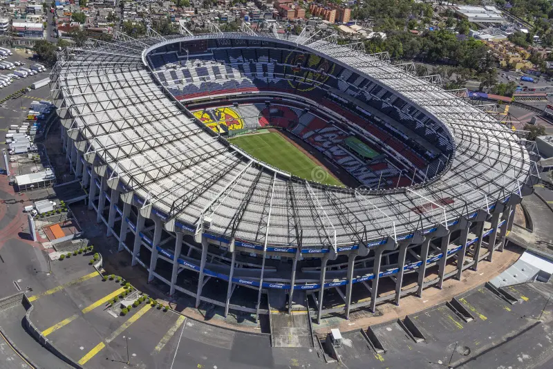
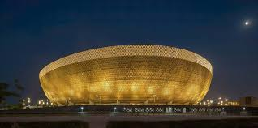

Templos del Fútbol MundialLos estadios de fútbol son mucho más que estructuras de concreto; son templos donde se han escrito las páginas más doradas de la historia del deporte. El Estadio Azteca en México es el único escenario del planeta que ha visto coronarse a dos de los más grandes astros: Pelé y Diego Armando Maradona. Por otro lado, el mítico Estadio de Maracaná en Brasil ostenta récords impresionantes de asistencia en finales de la Copa del Mundo. Joyas de la Arquitectura ModernaEn las últimas décadas, la ingeniería ha transformado la experiencia en las canchas mundiales. Los nuevos recintos deportivos cuentan con tecnología de punta que incluye techos retráctiles completos, pantallas gigantes con resolución de alta definición y sistemas avanzados de refrigeración interna. Estos avances permiten proteger la integridad de los jugadores y brindar la máxima comodidad posible a los miles de aficionados.
  |